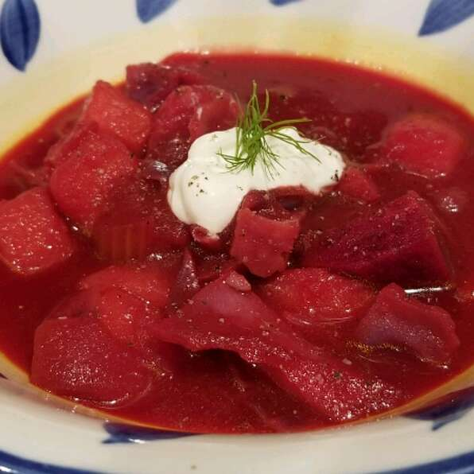

Back to the recipes list
Russian Cabbage Borscht

Description
This recipe is a traditional Russian red borscht soup loaded with potatoes, vegetables, cabbage and beets. This hearty soup is so healthy and all the vegetables come together and taste wonderful.
In most Slavic homes, this soup, a perfect representation of a "less is more" mentality and the love affair the Eastern European cooks had with all things sweet and sour, is served on a regular basis.
Ingredients
- 1½ cups thinly sliced potatoes
- 1 cup thinly sliced beets
- 4 cups vegetable stock or water
- 2 tablespoons butter
- 1½ cups chopped onions
- 1 teaspoon caraway seed (Optional)
- 2 teaspoons salt
- 1 celery stalk, chopped
- 1 large carrot, sliced
- 3 cups coarsely chopped red cabbage
- black pepper to taste
- ¼ teaspoon fresh dill weed
- 1 tablespoon cider vinegar
- 1 tablespoon honey
- 1 cup tomato purée
- sour cream, for topping
- chopped tomatoes, for garnish
Steps
- Place sliced potatoes and beets in a medium saucepan over high heat; cover with stock, and boil until vegetables are tender. Remove potatoes and beets with a slotted spoon, and reserve stock.
- Melt butter in a large skillet over medium heat. Stir in onions, caraway seeds, and salt; cook until onions become soft and translucent. Then stir in celery, carrots, and cabbage. Mix in reserved stock; cook, covered, until all vegetables are tender, about 10 minutes.
- Add potatoes and beets to the skillet. Season with black pepper and dill weed. Stir in cider vinegar, honey, and tomato puree. Cover, reduce heat to medium low, and simmer at least 30 minutes. Serve topped with sour cream, extra dill weed, and chopped fresh tomatoes.
Back to the recipes list